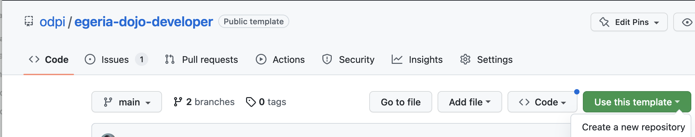
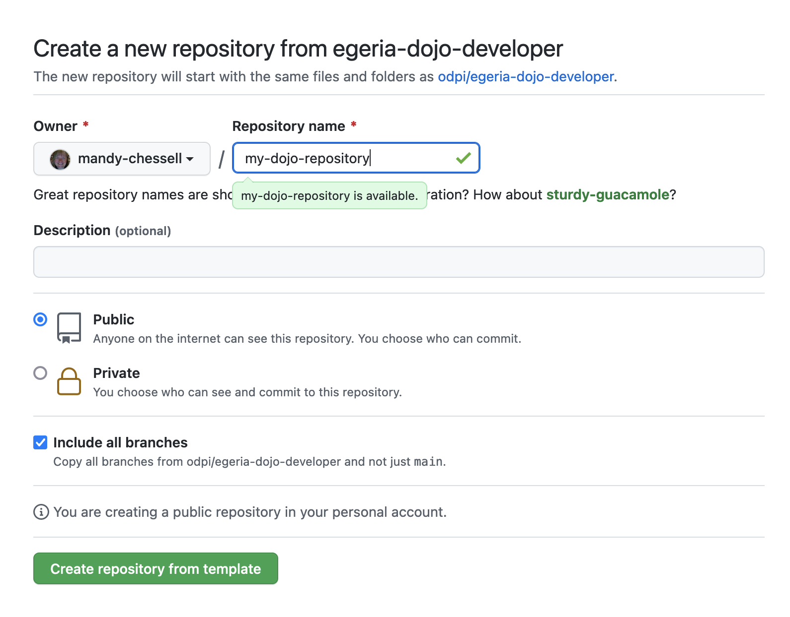
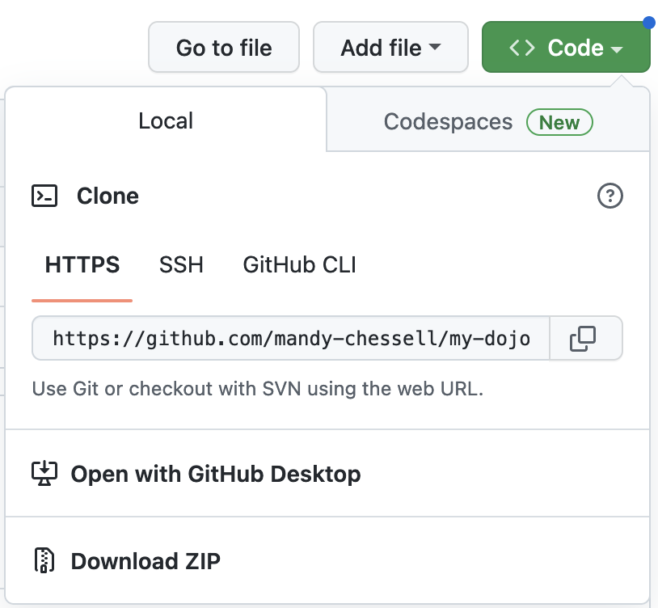

Egeria Dojo - Developer Day¶
Egeria has an extensive set of APIs and asynchronous event interactions for retrieving and maintaining metadata. It is also possible to write connectors that execute in Egeria's runtime and either:
- Provide Egeria with access to third party technology and resources.
- Provide the mechanism to synchronize metadata between a third party technology and the open metadata ecosystem that Egeria orchestrates.
Connectors can also be called in your applications to access third party technology along with its associated metadata.
Finally, Egeria's open metadata archives have a wide set of uses in distributing standard definitions and types.
After completing developer day of the egeria dojo you should feel comfortable calling Egeria's APIs, writing connectors and working with open metadata archives.
This dojo was last tested using Egeria release 3.14.
The dojo sessions are colour-coded like ski runs:
Beginner session
Intermediate session
Advanced session
Expert session
As you progress through the dojo, the colors of the sessions show how advanced your knowledge is becoming. The later sections are not necessarily harder to understand, but they build on knowledge from earlier sections.
The schedule also includes estimated times needed to complete each session. Even though a dojo is styled as a "day of intense focus", there is a lot of information conveyed, and you may find it more profitable to only complete one session in each sitting. Whichever way you choose to tackle the dojo, have fun and good luck - and do take breaks whenever you need to!
Preparing your machine for the Dojo¶
In preparation ...
Think about your machine type ...
The instructions below cover fairly standard machine architectures and set ups. If you are using, say the new M1 chip in your Mac, or Windows, or are running a work machine that has been locked down by your company, then you may need to take additional actions, install additional software and enable additional permissions. In all cases, check that the software being installed is correct for your machine type and its approved uses.
Egeria's interfaces are written in Java. It is expected that you have basic Java skills and have the Java 17 SDK installed on your machine.
Installing Java ...
Installing Java¶
Java is a relatively mature object-oriented programming language that was originally designed to be able to easily run programs across a number of different computer systems.
The Egeria project itself is primarily written in Java, and therefore a Java Runtime Environment (JRE) is the most basic component needed in order to run Egeria.
You will need a Java Development Kit (JDK) installed on your machine in order to build Egeria. (A JDK will include a JRE.)
There are various JREs/JDKs available, and you may even have one pre-installed on your system. You can check
if java is already installed by running the command java -version from the command-line.
Java can be installed by:
- Downloading the OpenJDK 17 (LTS) HotSpot JVM from Adoptium.
- Running the installer that is downloaded.
Alternatively you may wish to install from your package manager such as homebrew on macOS.
You will need to build your code which needs Apache Maven installed.
Installing Apache Maven ...
Installing Maven¶
Apache Maven is a build tool at is being phased out in the Egeria project, but is still required by some repositories and the Egeria developer dojo. It is capable of code compilation, running unit tests, validating dependencies and Javadoc as well as build our distribution archive.
Where it is used, Egeria requires Maven 3.5 or higher. 3.6.x or above is recommended.
Check if Maven is installed
mvn --version
Maven can be installed by downloading the software from the Apache maven website and unpacking it into a directory that is included in your PATH. Alternatively these methods are available:
Install Maven through HomeBrew
brew install maven
Install through yum
yum install maven
Install through apt-get
apt-get install maven
On Windows, you should use Windows Subsystem for Linux Version 2 or above, install an appropriate Linux distribution, and follow the instructions for that Linux distribution.
During the dojo you will running Apache Kafka to experiment with event notifications.
Installing Apache Kafka ...
Installing Apache Kafka¶
Apache Kafka's own QuickStart Guide covers installation and basic usage. You may alternatively wish to install Kafka using a package manager such as HomeBrew on MacOS.
Apache Zookeeper Dependency¶
Apache ZooKeeper is used by Apache Kafka for maintaining certain configuration information. It is therefore typically a pre-requisite to using Apache Kafka.
The QuickStart Guide provided by Kafka itself includes quick-and-dirty instructions on running a minimal ZooKeeper server necessary for Kafka's use. For more detailed information, you will want to read the ZooKeeper Getting Started Guide.
Configuration¶
For Egeria, the Kafka server needs to be running a PLAINTEXT listener. From the directory where Kafka is installed, check the config/server.properties file so that the listeners and advertised.listeners are setup as follows:
Example: Kafka configuration
listeners=PLAINTEXT://localhost:9092
advertised.listeners=PLAINTEXT://localhost:9092
The example above uses localhost:9092 for simplicity, assuming you are running Kafka locally on the same machine where you are doing your development. If running elsewhere, replace this with a name that is fully network resolveable (i.e. by both the host running Kafka and the client machines that will connect to Kafka from other hosts).
Egeria's source is on Github ...
Create a GitHub account ...
Getting a GitHub Id¶
Although all of the git repositories on GitHub are public, it is necessary to have a GitHub id to work with the Egeria content.
Creating a GitHub account can be done from the top of the GitHub home page.
Select the Sign up option.

Once you have created your account then sign in.
The dojo makes use of egeria libraries and code samples in the following git repositories and you will need a clone of them on your machine.
- https://github.com/odpi/egeria
- https://github.com/odpi/egeria-samples
- https://github.com/odpi/egeria-dev-projects
Downloading (cloning) Egeria's git repositories ...
Cloning the Egeria Source using git commands¶
The code for Egeria is downloaded from each git repository one at a time. The commands shown in each tab below create a clone (copy) of the egeria git repositories for your own use.
Want to make a contribution to Egeria?
If you want to make a contribution to Egeria, you need to clone your own fork of a repository rather than the main repository itself.
Create a new directory for Egeria's main libraries. In the example below it is called egeria-main-libraries:
mkdir egeria-main-libraries
Change to your new directory.
cd egeria-main-libraries
Egeria's source is extracted from GitHub using the following git command:
To retrieve the code for a specific release of Egeria enter
git clone -b egeria-release-{release-number} --single-branch https://github.com/odpi/egeria.git
git clone -b egeria-release-3.14 --single-branch https://github.com/odpi/egeria.git
To retrieve the latest "SNAPSHOT" code from the main branch of Egeria enter:
git clone https://github.com/odpi/egeria.git
A new directory has been created with the core Egeria source code. Change to the egeria directory and you are ready to build the source.
cd egeria
Create a new directory for Egeria's main libraries. In the example below it is called egeria-samples-source:
mkdir egeria-samples-source
Change to your new directory.
cd egeria-samples-source
Egeria's samples source is extracted from GitHub using the following git command:
git clone https://github.com/odpi/egeria-samples.git
A new directory has been created with the samples' source code. Change to the egeria-samples directory and you are ready to build the source.
cd egeria-samples
Create a new directory for Egeria's developer projects. In the example below it is called egeria-dev-projects-source:
mkdir egeria-dev-projects-source
Change to your new directory.
cd egeria-dev-projects-source
Egeria's source is extracted from GitHub using the following git command:
git clone https://github.com/odpi/egeria-dev-projects.git
A new directory has been created with the developer projects source code. Change to the egeria-dev-projects directory and you are ready to build the source.
cd egeria-dev-projects
The ls command allows you to list the files from the repository:
ls
It should be the same as the contents of the git repository on GitHub.
These next steps build the Egeria platform and then install it ready for the dojo.
Build Egeria's OMAGServerPlatform
From a command window, use the pwd command to make sure you are in the ../egeria-main-libraries/egeria directory created when you cloned the egeria.git repository.
$ pwd
/Users/mandy-chessell/egeria-main-libraries/egeria
$
Release 3.14 and before - patch Egeria's build
Open the build file that creates the distribution:
vi open-metadata-distribution/open-metadata-assemblies/build.gradle
include 'content-packs'
include 'sample-data'
i key to enter INSERT mode. Using the arrow keys to move to the end of the lines, update the path names to the following values and then press the ESC key.
include 'content-packs/*'
include 'sample-data/*/*'
:wq to save and quit the file.
Enter the following command to build the egeria libraries:
./gradlew build
Installing Egeria's core libraries (15 mins)
The egeria build process creates the distribution files for Egeria in the open-metadata-distribution/omag-server-platform module. To see its contents, after a full gradle build completes, use the following cd command to change to its build/distributions directory:
cd open-metadata-distribution/omag-server-platform/build/distributions
ls
{release}-distribution.tar.gz or egeria-platform-4.3-distribution.tar.gz in this example.
egeria-platform-4.3-distribution.tar.gz
Create a directory for Egeria and copy the tar file into it. The two commands shown below creates a directory in your home directory and then copies the egeria distribution file into it.
mkdir ~/egeria-install
cp egeria*-distribution.tar.gz ~/egeria-install
This next command changes to the new directory.
cd ~/egeria-install
It is now possible to unpack the tar file with the following steps.
gunzip egeria*-distribution.tar.gz
tar -xf egeria*-distribution.tar
{release}-distribution.tar.gz or egeria-4.2-distribution.tar.gz in this example. Change to this new directory and list its contents as shown below.
cd egeria*gz
ls
Dockerfile LICENSE NOTICE
README.md assembly dist
The Dockerfile contains the directives to build a docker image. Instructions for doing this are in the README.md file. Change to the assembly directory.
cd assembly
ls
README.md etc opt platform
platform is a directory for the OMAG Server Platform that is used to run open metadata and governance services. This is the omag-server-platform-{{release}}.jar.
ls platform
README.md data keystore.p12 logs truststore.p12
application.properties extra lib omag-server-platform-4.3.jar
platform/lib directory is where the jar files for connectors, samples and new registered services are installed. It includes the connectors that are located in the egeria.git repository.
ls platform/lib
README.md csv-file-connector-4.3.jar jdbc-integration-connector-4.3.jar
apache-atlas-rest-connector-4.3.jar data-folder-connector-4.3.jar jdbc-resource-connector-4.3.jar
atlas-integration-connector-4.3.jar discovery-service-connectors-4.3.jar kafka-integration-connector-4.3.jar
audit-log-console-connector-4.3.jar dynamic-archiver-connectors-4.3.jar kafka-open-metadata-topic-connector-4.3.jar
audit-log-event-topic-connector-4.3.jar elasticsearch-integration-connector-4.3.jar omrs-rest-repository-connector-4.3.jar
audit-log-file-connector-4.3.jar env-variable-secrets-store-connector-4.3.jar open-lineage-janus-connector-4.3.jar
audit-log-slf4j-connector-4.3.jar files-integration-connectors-4.3.jar open-metadata-archive-directory-connector-4.3.jar
avro-file-connector-4.3.jar governance-action-connectors-4.3.jar open-metadata-archive-file-connector-4.3.jar
basic-file-connector-4.3.jar governance-services-sample-4.3.jar open-metadata-security-samples-4.3.jar
cohort-registry-file-store-connector-4.3.jar graph-repository-connector-jar-with-dependencies-4.3.jar openapi-integration-connector-4.3.jar
configuration-encrypted-file-store-connector-4.3.jar inmemory-open-metadata-topic-connector-4.3.jar openlineage-integration-connectors-4.3.jar
configuration-file-store-connector-4.3.jar inmemory-repository-connector-4.3.jar spring-rest-client-connector-4.3.jar
platform/extra directory is where connectors from other repositories are added (including those that you write yourself). Copy the jar files for any additional connectors you want to use into the extra directory. The connectors available for Egeria are listed in the Connector Catalog.
The opt and etc directories contain additional content that can used with the platform. For example, the etc/reports directory contains java programs that describe different aspects of the platform.
ls etc/reports
README.md component-id-report.jar database-report.jar egeria-platform-report.jar
opt/content-packs directory contains Open Metadata Archives that provide sample open metadata content. The README.md describes their content.
ls content-packs
CloudInformationModel.json CocoGovernanceProgramArchive.json OpenConnectorsArchive.json SimpleDataCatalog.json
CocoBusinessSystemsArchive.json CocoOrganizationArchive.json OpenMetadataTypes.json SimpleEventCatalog.json
CocoClinicalTrialsTemplatesArchive.json CocoSustainabilityArchive.json README.md SimpleGovernanceCatalog.json
CocoComboArchive.json CocoTypesArchive.json SimpleAPICatalog.json
CocoGovernanceEngineDefinitionsArchive.json DataStoreConnectorTypes.json SimpleCatalog.json
/opt/sample-data directory contains sample data that is used in various labs and samples.
ls /opt/sample-data/*
opt/sample-data/README.md
opt/sample-data/data-files:
CompDir-ContactEmail.csv CompDir-ContactPhone.csv Employee-Dept.csv Location-WorkLocation.csv
CompDir-ContactList.csv EmplSAnl-EmpSalaryAnalysis.csv Employee-Employee.csv Patient-Patient.csv
opt/sample-data/database:
ibm-db2 mariadb postgresql
opt/sample-data/oak-dene-drop-foot-weekly-measurements:
week1.csv week2.csv week3.csv week4.csv week5.csv week6.csv week7.csv week8.csv week9.csv
Notice that each directory contains a README.md file that explains the content of the directory.
There is a template git repository that contains a set of projects to support you as you work through the developer dojo exercises.
Create a git repository for your code ...
Link to the template repository: https://github.com/odpi/egeria-dojo-developer.
Click on the Use this template button and select Create a new repository.

A new page is displayed. Enter the name of your new repository, click the option Include all branches. This will copy both the template code and the worked answers. It is up to you whether you want the repository to be public or private. If it is public, it is easier for the Egeria community to help you if you get stuck.

Select the Code button and copy the HTTPS URL to clone this repository.

On your laptop ... from a command window
Create a new directory for your work:
mkdir egeria-dojo
cd egeria-dojo
Clone your new repository replacing the url with the url of your repository:
git clone https://github.com/USER/my-dojo-repository.git
A new directory has been created with the template code.
cd egeria-dojo
The ls command allows you to list the files from the repository:
ls
It should be the same as the contents of the git repository on GitHub.
Many of the contributors to the Egeria project use the IntelliJ IDEA IDE. Jetbrains offers a free community edition of IntelliJ which is sufficient to work with Egeria. You are free to use any IDE during the dojo, however the instructions will focus on IntelliJ IDEA.
Installing IntelliJ IDEA ...
Installing Intellij¶
Link to the download page and follow the instructions. Then start up IntelliJ and a wizard appears.
Congratulations, you are ready to begin.
Dojo Activities¶
Developer Dojo starts here
Developer choices when customizing Egeria (10 mins reading)
The diagram below illustrates the choices you have in developing with Egeria:

Egeria offers Java clients for utilities and applications to call the Egeria APIs and receive event notifications. It is also possible to directly call the REST APIs and access the events through the event bus APIs. Finally connectors can be plugged into the Egeria OMAG Server Platform to customize its capabilities. Connectors may also be used to access the content of digital resources along with its metadata from the open metadata and governance ecosystem
The numbers on the diagram refer to these notes:
-
Egeria's Java clients wrap calls to Egeria's REST APIs. The aim is to provide a language-specific interface that manages parameter validation along with the marshalling and de-marshalling of the call parameters and responses to these services.
-
Many of Egeria's Java clients provide the mechanism to register a listener with a topic that an Egeria service is publishing notifications to. This removes all requirements for the consuming Java application to interact with the event bus technology.
-
Some of Egeria's Java clients also support the creation of digital resource connectors that can access the content of digital resources along with the metadata about the digital resource.
-
For applications that are not written in Java, it is possible to call Egeria directly through its REST APIs, and access Egeria's notifications by connecting directly to the topics on the event bus.
-
Egeria's OMAG Server Platform can host many types of connectors. For example, there are connectors that automatically catalog metadata from a third party technology.
-
Connectors hosted in the OMAG Server platform may use open metadata to configure a third party digital service.
-
Connectors are also used to connect metadata stores and catalogs into the open metadata ecosystem.
-
Governance services are specialist connectors hosted in the OMAG Server Platform to automate the maintenance of both metadata and digital resources.
-
Finally, Egeria uses connectors in the OMAG Server Platform to access the services it needs to operate. Many of these runtime connectors are based around files. They can be replaced to enable Egeria to run in new types of containers or operating platforms.
In this dojo, you will have an opportunity to build and run Java utilities and connectors. However before you get to the coding, you will spend some time setting up your development and test environment.
Setting up your Test environment (30 mins)
Egeria's services run in the OMAG Server Platform. The jar file for the OMAG Server Platform was built by the egeria.git build. It is located in the platform directory of your Egeria install and is called omag-server-platform-{{release}}.jar. You will need an easy way to start and stop the OMAG Server Platform. This is done with an IntelliJ Configuration.
Open your copy of the egeria-dojo-developer.git repository in a new window in IntelliJ.
Set up IntelliJ to run the OMAG Server Platform ...
Creating a configuration for OMAG Server Platform¶
From your IntelliJ window, look for a box called Add Configuration...
 Or you may see a dropdown, in which case select "Edit Configurations ..."
Or you may see a dropdown, in which case select "Edit Configurations ..."
Click on it and a wizard window opens. Open the list of Templates on the left hand column (you may need to click on the + sign in some versions of IntelliJ).
 Scroll down to Jar Application template and select it. A form appears on the right-hand side.
Scroll down to Jar Application template and select it. A form appears on the right-hand side.
 Enter:
Enter:
EgeriaPlatformat the top underName:Path to Jaris set to the directory where the OMAG Server Platform jar is locatedVM Optionsis set to-Dstrict.ssl=false -Dloader.path=server/lib -Dserver.port=9443. This turns off SSL checking, points to thelibdirectory where you will be adding your new connector jar files and requests that the OMAG Server listens on port9443.Working Directoryis set to the parent directory above the directory with the OMAG Server Platform jar. This directory includes thetruststore.p12certificate file needed for the platform to start successfully.
The example below is from a machine where the directory used to install Egeria was /Users/mandy-chessell/egeria-install. Notice the directory name needs to be specified in full, - the ~ notation does not work here. In this example, the Egeria release used was 4.3.

Once you have entered these values, click OK. The Add Configurations ... box has been replaced by a drop-down menu that includes your new configuration called EgeriaPlatform.

If you click on the down arrow next to EgeriaPlatform you will see Add Configurations ... has been replaced by Edit configurations.... You will use this option later to add configurations for other utilities as the dojo progresses.

With EgeriaPlatform showing in the configurations box, click the green triangle and a Run tab opens showing the platform is starting up. The first line of the output is the call used to start the platform. You should be able to see the options that you added to the EgeriaPlatform configuration. After the command is the console output of the OMAG Server Platform. When you see the OMAG server platform ready for more configuration message, it is ready for work.
/Library/Java/JavaVirtualMachines/temurin-17.jdk/Contents/Home/bin/java -DString.ssl=false -Dloader.path=lib,extra -Dserver.port=9443 -Dfile.encoding=UTF-8 -jar /Users/mandy-chessell/egeria-install/egeria-platform-4.3-distribution.tar.gz/assembly/platform/omag-server-platform-4.3.jar
Project Egeria - Open Metadata and Governance
____ __ ___ ___ ______ _____ ____ _ _ ___
/ __ \ / |/ // | / ____/ / ___/ ___ ____ _ __ ___ ____ / _ \ / / __ / / / _ /__ ____ _ _
/ / / // /|_/ // /| | / / __ \__ \ / _ \ / __/| | / // _ \ / __/ / /_/ // // | / _\ / /_ / | / _// || |
/ /_/ // / / // ___ |/ /_/ / ___/ // __// / | |/ // __// / / __ // // / \ / /_ / _// / // / / / / /
\____//_/ /_//_/ |_|\____/ /____/ \___//_/ |___/ \___//_/ /_/ /_/ \__/\//___//_/ \__//_/ /_/ /_/
:: Powered by Spring Boot (v3.1.1) ::
2023-09-04T15:46:39.390+01:00 INFO 76773 --- [ main] o.o.o.s.springboot.OMAGServerPlatform : Starting OMAGServerPlatform using Java 17.0.6 with PID 76773 (/Users/mandy-chessell/egeria-install/egeria-platform-4.3-distribution.tar.gz/assembly/platform/omag-server-platform-4.3.jar started by mandy-chessell in /Users/mandy-chessell/egeria-install/egeria-platform-4.3-distribution.tar.gz/assembly/platform)
2023-09-04T15:46:39.392+01:00 INFO 76773 --- [ main] o.o.o.s.springboot.OMAGServerPlatform : No active profile set, falling back to 1 default profile: "default"
2023-09-04T15:46:43.116+01:00 INFO 76773 --- [ main] o.s.b.w.embedded.tomcat.TomcatWebServer : Tomcat initialized with port(s): 9443 (https)
2023-09-04T15:46:44.443+01:00 INFO 76773 --- [ main] o.o.o.s.springboot.OMAGServerPlatform : Working directory is: /Users/mandy-chessell/egeria-install/egeria-platform-4.3-distribution.tar.gz/assembly/platform
2023-09-04T15:46:44.443+01:00 WARN 76773 --- [ main] o.o.o.s.springboot.OMAGServerPlatform : Java trust store 'javax.net.ssl.trustStore' is null - this is needed by Tomcat - using 'server.ssl.trust-store'
2023-09-04T15:46:46.591+01:00 INFO 76773 --- [ main] o.s.b.w.embedded.tomcat.TomcatWebServer : Tomcat started on port(s): 9443 (https) with context path ''
2023-09-04T15:46:46.608+01:00 INFO 76773 --- [ main] o.o.o.s.springboot.OMAGServerPlatform : Started OMAGServerPlatform in 7.925 seconds (process running for 8.73)
Mon Sep 04 15:46:46 BST 2023 No OMAG servers listed in startup configuration
Mon Sep 04 15:46:46 BST 2023 OMAG server platform ready for more configuration
The Run tab where the OMAG Server Platform is running includes a control panel that allows you to start, restart, stop and control the scrolling of output of the program that is running. If you hover your mouse over the controls, the hover-text indicates what it does.

Feel free to experiment with the controls - but be sure that the OMAG Server Platform is running when you finish as it is needed for the next step.
Calling Egeria's APIs (2.5 hours)
Now that you have Egeria's OMAG Server Platform running, you are ready to use its APIs.
Different types of APIs and their uses (60 mins)
Egeria's APIs can be broken down into three main categories:
- APIs to configure Egeria
- APIs to operate Egeria
- APIs to work with open metadata and governance
It is useful to see them running to appreciate the differences between them.
Understanding how a platform has been deployed
In the omag-server-platform assembly, there is a jar file called egeria-platform-report.jar under the etc/reports directory. This contains a utility that reports on the status of a running OMAG Server Platform.
Run EgeriaPlatformReport
Select EgeriaPlatformReport and then Run 'EgeriaPlatformReport...main()' from the right-mouse menu.
A new Run tab appears next to EgeriaPlatform. EgeriaPlatformReport runs but fails:
/Library/Java/JavaVirtualMachines/temurin-17.jdk/Contents/Home/bin/java -Dfile.encoding=UTF-8 -jar /Users/mandy-chessell/egeria-install/egeria-platform-4.3-distribution.tar.gz/assembly/etc/reports/egeria-platform-report.jar
===============================
OMAG Server Platform Report: Mon Sep 04 18:00:51 BST 2023
===============================
Running against platform: https://localhost:9443
Using userId: garygeeke
Platform report for: https://localhost:9443
Platform deployment
There was an org.odpi.openmetadata.frameworks.connectors.ffdc.PropertyServerException exception when calling the platform. Error message is: OMAG-COMMON-503-001 A client-side exception was received from API call getPlatformOrigin to OMAG Server EgeriaPlatform at https://localhost:9443. The error message was CLIENT-SIDE-REST-API-CONNECTOR-503-002 A client-side exception org.springframework.web.client.ResourceAccessException was received by method getPlatformOrigin from API call https://localhost:9443/open-metadata/platform-services/users/{1}/server-platform/origin to server EgeriaPlatform on platform https://localhost:9443. The error message was I/O error on GET request for "https://localhost:9443/open-metadata/platform-services/users/garygeeke/server-platform/origin": PKIX path building failed: sun.security.provider.certpath.SunCertPathBuilderException: unable to find valid certification path to requested target
Process finished with exit code 255
Set up VM Options

Click on the white down arrow of the configurations box and select Edit Configurations.... Select the configuration for EgeriaPlatformReport to show its configuration form.
Add -Dstrict.ssl=false to the VM Options and click OK to save the configuration. This turns off the need for a certificate.
Don't see VM Options in the configuration form?
You may need to use the Modify Options dropdown to Add VM Options to your configuration form.


Rerun EgeriaPlatformReport
Re-run EgeriaPlatformReport by clicking on the green arrow on the Run tab. There is more output this time even though it still seems to fail in the end. It begins with the report header that records the platform it is running against.
/Library/Java/JavaVirtualMachines/temurin-17.jdk/Contents/Home/bin/java -Dstrict.ssl=false -Dfile.encoding=UTF-8 -jar /Users/mandy-chessell/egeria-install/egeria-platform-4.3-distribution.tar.gz/assembly/etc/reports/egeria-platform-report.jar
===============================
OMAG Server Platform Report: Mon Sep 04 19:38:03 BST 2023
===============================
Running against platform: https://localhost:9443
Using userId: garygeeke
Platform report for: https://localhost:9443
Then EgeriaPlatfromReport starts to call the Egeria APIs that are used for configuring and managing the OMAG Server Platform.
Platform deployment
Egeria version: Egeria OMAG Server Platform (version 4.3)
Configuration document store connector: <null>
Platform security connector: <null>
The Egeria version is retrieved using the getPlatformOrigin method of the Platform Services.
1 2 3 | |
OMAGServerPlatformConfigurationClient
1 2 3 4 | |
Next is the list of Registered services. These are optional services that can be plugged into the OMAG Server Platform and provide the services to retrieve and maintain/govern open metadata. The list that you see is the default set of services installed with the platform.
List of registered services from EgeriaPlatformReport
Registered services
Data Manager OMAS: Capture changes to the data stores and data set managed by a data manager such as a database server, content manager or file system.
Subject Area OMAS: Document knowledge about a subject area
Glossary View OMAS: Support glossary terms visualization
Design Model OMAS: Exchange design model content with tools and standard packages
Security Officer OMAS: Set up rules and security tags to protect data
Asset Manager OMAS: Manage metadata from a third party asset manager
IT Infrastructure OMAS: Manage information about the deployed IT infrastructure
Data Science OMAS: Create and manage data science definitions and models
Community Profile OMAS: Define personal profile and collaborate
Data Engine OMAS: Exchange process models and lineage with a data engine
Discovery Engine OMAS: Support for automated metadata discovery engines
Digital Architecture OMAS: Design of the digital services for an organization
Asset Owner OMAS: Manage an asset
Stewardship Action OMAS: Manage exceptions and actions from open governance
Governance Program OMAS: Manage the governance program
Digital Service OMAS: Manage a digital service through its lifecycle
Asset Lineage OMAS: Store asset lineage
Asset Consumer OMAS: Access assets through connectors
Asset Catalog OMAS: Search and understand your assets
DevOps OMAS: Manage a DevOps pipeline
Software Developer OMAS: Interact with software development tools
Project Management OMAS: Manage governance related projects
Governance Engine OMAS: Set up an operational governance engine
Data Privacy OMAS: Manage governance of privacy
Security Manager OMAS: Manages exchange of metadata with a security service
Governance Action OMES: Executes requested governance action services to monitor, assess and maintain metadata and its real-world counterparts.
Repository Governance OMES: Dynamically governance open metadata repositories in the connected cohorts.
Asset Analysis OMES: Analyses the content of an asset's real world counterpart, generates annotations in an open discovery report that is attached to the asset in the open metadata repositories.
Infrastructure Integrator OMIS: Exchange information relating to IT infrastructure such as hosts, platforms, servers, server capabilities and services.
Files Integrator OMIS: Extract metadata about files stored in a file system or file manager.
Topic Integrator OMIS: Exchange metadata with third party event-based brokers.
Security Integrator OMIS: Distribute security properties to security enforcement points.
API Integrator OMIS: Exchange metadata with third party API Gateways.
Search Integrator OMIS: Store metadata with a third party technology that is focused on search efficiency.
Lineage Integrator OMIS: Manage capture of lineage from a third party tool.
Database Integrator OMIS: Extract metadata such as schema, tables and columns from database managers.
Catalog Integrator OMIS: Exchange metadata with third party data catalogs.
Display Integrator OMIS: Exchange metadata with applications that display data to users.
Analytics Integrator OMIS: Exchange metadata with third party analytics tools.
Organization Integrator OMIS: Load information about the teams and people in an organization and return collaboration activity.
Glossary Author OMVS: View Service for glossary authoring.
Dynamic Infrastructure and Operations OMVS: Explore and operate an open metadata ecosystem.
Repository Explorer OMVS: Explore open metadata instances.
Glossary Workflow OMVS: Create glossary terms and organize them into categories as part of a controlled workflow process. It supports the editing glossary and multiple states.
My Profile OMVS: Manage information about the logged on user as well as their preferences.
Type Explorer OMVS: Explore the open metadata types in a repository or cohort.
Server Author OMVS: Author servers.
Glossary Browser OMVS: View glossary terms and categories within a glossary.
The registered are also retrieved through the Platform Services using the getXXXServices method as follows:
1 2 3 4 | |
Observe no servers from EgeriaPlatformReport
Finally, EgeriaPlatformReport calls the Administration Services to request the list of configured servers. At this stage, there are none.
Platform servers
None
Process finished with exit code 0
EgeriaPlatformReport also creates a markdown document called egeria-platform-report.md that contains its output. This version of egeria-platform-report.md is included for your reference.
Your development landscape ...

Your development landscape showing the EgeriaPlatformReport calling EgeriaPlatform.
Understanding how a server has been configured
Servers are configured through the Administration Services. It involves a sequence of calls that sets up its name and properties, the registered services that it will run along with the connectors that it will host.
Setting up ServerConfig
In egeria-dev-projects is a module called egeria-config-utility. It contains a utility called ServerConfig that includes the method calls to create different types of servers, to make changes to a server's configuration and to delete a server's configuration. Navigate to the ServerConfig class and run it using the right-mouse menu as before.

It will also fail with the certificate error. Edit ServerConfig's newly created configuration and add -Dstrict.ssl=false to the VM Options and click OK to save the configuration to turn off the need for a certificate.

When you restart ServerConfig, it displays a menu:
/Library/Java/JavaVirtualMachines/temurin-11.jdk/Contents/Home/bin/java -Dstrict.ssl=false ... org.odpi.openmetadata.devprojects.utilities.serverconfig.ServerConfig
===============================
OMAG Server Operations Utility: Mon Feb 14 09:33:07 GMT 2022
===============================
Running against platform: https://localhost:9443 - Egeria OMAG Server Platform (version 3.12)
Using userId: garygeeke
Enter a command along with the server name and any optional parameters. Press enter to execute request.
- create-metadata-store <serverName>
- create-integration-daemon <serverName> <metadataStoreServerName>
- add-topic-connector <serverName> <optionalConnectorProviderClassName>
- log-event-contents <serverName> <optionalConnectorProviderClassName>
- add-cohort-member <serverName> <optionalCohortName>
- add-startup-archive <serverName> <archiveFileName>
- update-server-user-id <serverName> <newUserId>
- delete-server <serverName>
- exit
Configuring the msd1 server
Enter create-metadata-store mds1 in the space under the menu and press return. You should see a message Configuring metadata store: mds1 and the menu is redisplayed.

Rerun EgeriaPlatformReport (select from the configurations box dropdown) and you notice that the exception relating to the missing configuration directory has gone and the report now displays details of the new mds1 server. Markdown version of report for reference.
Reviewing the output from EgeriaPlatformReport
There is a lot of detail in this new report - much of it retrieved from the server's configuration document that was created when the mds1 server was configured.
The Administration Services' ConfigurationManagementClient is able to retrieve, update and deploy configuration documents to different OMAG Server Platforms. EgeriaPlatformReport used the following method call to retrieve all of the available configuration documents before printing them out to the report.
1 2 3 | |
mds1 server configuration:
- The type of the server is null - this is determined when the server is started and Egeria is interpreting/validating the server's configuration document. You will see that value filled in at the next step in the dojo.
- The server is running with a userId of
cocoMDS1npaand a security connector oforg.odpi.openmetadata.metadatasecurity.samples.CocoPharmaServerSecurityProvider. The security connector authorizes requests to Egeria andcocoMDS1npais one of the userIds it recognizes. You can change these hard-coded values inServerConfigto experiment with different security settings.
Platform servers
Server: mds1
Type: <null>
Description: Metadata Access Store called mds1 running on platform https://localhost:9443
UserId: cocoMDS1npa
Security Connector
Implementation: org.odpi.openmetadata.metadatasecurity.samples.CocoPharmaServerSecurityProvider
Location: <null>
- The
mds1server is using an in-memory local metadata repository. This means that its metadata repository is emptied each time the server is started up - which is very useful when testing new utilities. The remote connector for the local repository is the connector that other servers would use to callmds1. It is sent out on cohort registration exchanges whenevermds1registers with a cohort.
Local Repository
Local Repository Mode: Open Metadata Native
Local Repository Connector
Implementation: org.odpi.openmetadata.adapters.repositoryservices.inmemory.repositoryconnector.InMemoryOMRSRepositoryConnectorProvider
Location: <null>
Local Repository Remote Connector
Implementation: org.odpi.openmetadata.adapters.repositoryservices.rest.repositoryconnector.OMRSRESTRepositoryConnectorProvider
Location: https://localhost:9443/servers/mds1
- Finally, the configured Open Metadata Access Services (OMASs) are listed including: Asset Manager OMAS, Community Profile OMAS, Data Manager OMAS, Digital Architecture OMAS, Asset Consumer OMAS, Governance Program OMAS and Asset Owner OMAS. Below is a snippet from the report showing Asset Manager OMAS.
Services
Service: Asset Manager OMAS
Service Options
SupportedZones: [quarantine, trash-can, data-lake]
PublishZones: [data-lake, personal-files, personal-files]
DefaultZones: [quarantine]
Connectors
InTopic
Implementation: org.odpi.openmetadata.adapters.eventbus.topic.kafka.KafkaOpenMetadataTopicProvider
Location: egeria.omag.server.mds1.omas.assetmanager.inTopic
Configuration Properties: {producer={bootstrap.servers=localhost:9092}, local.server.id=fab57cdc-e7fb-4f23-8237-376c9fda492b, consumer={bootstrap.servers=localhost:9092, auto.commit.interval.ms=1}}
OutTopic
Implementation: org.odpi.openmetadata.adapters.eventbus.topic.kafka.KafkaOpenMetadataTopicProvider
Location: egeria.omag.server.mds1.omas.assetmanager.inTopic
Configuration Properties: {producer={bootstrap.servers=localhost:9092}, local.server.id=fab57cdc-e7fb-4f23-8237-376c9fda492b, consumer={bootstrap.servers=localhost:9092, auto.commit.interval.ms=1}}
Service Options control the behaviour of the OMAS.
SupportedZonesdefines the governance zones that an asset must belong to in order to be retrievable through the OMAS.DefaultZonesdefines the governance zones assigned to a new asset created through this interface.PublishZonesare the governance zones that are set in the asset when the publishXXX() method is called (more later).
You can also see from the implementation that the Asset Manager OMAS is configured to use Apache Kafka for its In Topic and Out Topic.
Your development landscape ...

Your development landscape adding the ServerConfig utility calling EgeriaPlatform to create server configuration documents.
Understanding how a server is running
Now it is time to start mds1 and observe the changes to EgeriaPlatformReport's output. For this final step, we use another utility called ServerOps in module egeria-ops-utility.

Setting up ServerOps
As before, navigate to the ServerOps class, run it using the right-mouse menu and then, when it fails with the certificate error, add -Dstrict.ssl=false to the VM Options and re-run ServerOps once you have saved the configuration.

ServerOps displays a menu of operations that it can perform.
/Library/Java/JavaVirtualMachines/temurin-11.jdk/Contents/Home/bin/java -Dstrict.ssl=false ... org.odpi.openmetadata.devprojects.utilities.serverops.ServerOps
===============================
OMAG Server Operations Utility: Mon Feb 14 10:39:52 GMT 2022
===============================
Running against platform: https://localhost:9443 - Egeria OMAG Server Platform (version 3.12)
Using userId: garygeeke
Available servers: [mds1]
Enter a command {start, stop, exit} along with one or more space separate server names. Press enter to execute request.
Starting mds1
Enter start mds1 and press return. You will see the message Starting mds1 .... Then one of two things happens ...
- It completes successfully and you see:
Starting mds1 ...
Mon Feb 14 10:46:58 GMT 2022 mds1 is running the following services: [Open Metadata Repository Services (OMRS), Connected Asset Services, Asset Consumer OMAS, Community Profile OMAS, Asset Owner OMAS, Data Manager OMAS, Asset Manager OMAS, Governance Program OMAS, Digital Architecture OMAS]
Available servers: [mds1]
Enter a command {start, stop, exit} along with one or more space separate server names. Press enter to execute request.
- It seem to hang after outputting
Starting mds1 .... Switch to theEgeriaPlatformtab and you will see many audit log messages from Egeria displayed on the console. At the end is this set of messages which indicates that Apache Kafka is not running.
Mon Feb 14 10:43:02 GMT 2022 mds1 Startup OMAG-ADMIN-0202 The Asset Consumer Open Metadata Access Service (OMAS) is supporting the following governance zones: [data-lake, personal-files, personal-files]
Mon Feb 14 10:43:02 GMT 2022 mds1 Startup OCF-KAFKA-TOPIC-CONNECTOR-0001 Connecting to Apache Kafka Topic egeria.omag.server.mds1.omas.assetconsumer.outTopic with a server identifier of e6afd331-1853-42d0-a816-bb1eeb30c7b8
Mon Feb 14 10:43:02 GMT 2022 mds1 Startup OCF-KAFKA-TOPIC-CONNECTOR-0015 The local server is attempting to connect to Kafka, attempt 1
Mon Feb 14 10:44:02 GMT 2022 mds1 Startup OCF-KAFKA-TOPIC-CONNECTOR-0015 The local server is attempting to connect to Kafka, attempt 2
The server is waiting for Apache Kafka to start. If this occurs start Apache Kafka (and Apache Zookeeper) ...
Starting Apache Kafka
Starting Apache Kafka¶
From within the bin folder of Apache Kafka
./zookeeper-server-start.sh ../config/zookeeper.properties &
rm -rf /tmp/kafka-logs/*
./kafka-server-start.sh ../config/server.properties
When installed via HomeBrew
brew services start zookeeper
brew services start kafka
Once Apache Kafka is running, mds1 completes start-up and ServerOps outputs the success message in its Run tab as shown in outcome 1. It is possible, however, that you do not manage to get Kafka running in time and mds1 fails to start. If that happens just re-run the start mds1 command of ServerOps once you have Kafka running.
Restarting servers
If you call start mds1 when mds1 is already, it has the effect of restarting mds1. This is because the first step in starting a server is to stop the previous instance. This is useful to know in later exercises when you are creating metadata in mds1's repository. Since mds1 is using an in-memory repository, this restart will clear it to empty and you can start again.
Review the expanded information from EgeriaPlatformReport
Now that mds1 is running, re-run EgeriaPlatformReport and you see that information about the server's type along with the operational status of the server and the services have been added. For example:
Platform servers
Server: mds1
Type: Metadata Access Store
Description: Metadata Access Store called mds1 running on platform https://localhost:9443
UserId: cocoMDS1npa
Security Connector
Implementation: org.odpi.openmetadata.metadatasecurity.samples.CocoPharmaServerSecurityProvider
Location: <null>
Local Repository
Local Repository Mode: Open Metadata Native
Local Repository Connector
Implementation: org.odpi.openmetadata.adapters.repositoryservices.inmemory.repositoryconnector.InMemoryOMRSRepositoryConnectorProvider
Location: <null>
Local Repository Remote Connector
Implementation: org.odpi.openmetadata.adapters.repositoryservices.rest.repositoryconnector.OMRSRESTRepositoryConnectorProvider
Location: https://localhost:9443/servers/mds1
Last Start Time: Mon Feb 14 11:31:24 GMT 2022
Server Active Status: Running
History
Start Time: Mon Feb 14 10:43:01 GMT 2022
End Time: Mon Feb 14 11:31:09 GMT 2022
Start Time: Mon Feb 14 11:31:09 GMT 2022
End Time: Mon Feb 14 11:31:24 GMT 2022
Services
Service: Asset Manager OMAS
Service Status: Running
Service Options
SupportedZones: [quarantine, trash-can, data-lake]
PublishZones: [data-lake, personal-files, personal-files]
DefaultZones: [quarantine]
Connectors
InTopic
Implementation: org.odpi.openmetadata.adapters.eventbus.topic.kafka.KafkaOpenMetadataTopicProvider
Location: egeria.omag.server.mds1.omas.assetmanager.inTopic
Configuration Properties: {producer={bootstrap.servers=localhost:9092}, local.server.id=e6afd331-1853-42d0-a816-bb1eeb30c7b8, consumer={bootstrap.servers=localhost:9092, auto.commit.interval.ms=1}}
OutTopic
Implementation: org.odpi.openmetadata.adapters.eventbus.topic.kafka.KafkaOpenMetadataTopicProvider
Location: egeria.omag.server.mds1.omas.assetmanager.inTopic
Configuration Properties: {producer={bootstrap.servers=localhost:9092}, local.server.id=e6afd331-1853-42d0-a816-bb1eeb30c7b8, consumer={bootstrap.servers=localhost:9092, auto.commit.interval.ms=1}}
Service: Open Metadata Repository Services (OMRS)
Service Status: Running
Service: Connected Asset Services
Service Status: Starting
The additional information about the servers is coming from the Platform Services
1 2 3 4 5 6 7 8 9 10 11 12 13 14 15 16 | |
platformServerStatus returned from getServerStatus includes:
serverName- Name of the server.isActive- Boolean flag indicating whether it is active (running) on the server.serverStartTime- The most recent date/time that the server started.serverEndTime- The most recent date/time that the server stopped.serverHistory- The list of start and stop times for the previous restarts of the server.
The Administration Services also provide information about the services running within a server.
1 2 3 4 5 | |
adminServerStatus returned from getServerStatus includes:
serverName- Name of the server.serverType- Derived by the administration services when it starts the server. It is based on an assessment of the services requested in the configuration document.serverStartTime- The most recent date/time that the server started.serverActiveStatus- The running status of the server, which is one of 5 values:Unknown- The state of the server is unknown. This is equivalent to a null value.Starting- The server is starting.Running- The server has completed start up and is running.Stopping- The server has received a request to shutdown.Inactive- The server is not running.
services- The list of the services of the server. For each entry:serviceName- the name of the service.serviceStatus- the running status of the service, which is one of 5 values:Unknown- The state of the service is unknown. This is equivalent to a null value.Starting- The service is starting.Running- The service has completed start up and is running.Stopping- The service has received a request to shutdown.Inactive- The service is not running.
Your development landscape ...

Your development landscape adding the ServerOps utility calling EgeriaPlatform to start and stop servers.
Summary and further study
From this exercise of the developer dojo, you should have an understanding of the behaviour of the Platform Services and Administration Services.
ServerConfigis using the Administration Services to configure different types of OMAG Servers.ServerOpsis using the Administration Services to start and stop named OMAG Servers.EgeriaPlatformReportis blending information from the platform's deployment with information about configured servers, known servers and active servers. This information comes both from the Administration Services and Platform Services.
The egeria-dev-projects utilities are designed to illustrate how to use these services and you may want to take time to review the code and make changes to explore new functions or customize them to your working environment.
Itching to code? The next exercise gives you an opportunity to write your own utilities that work with the OMAS APIs. This may be a good time to take a break :)
Writing simple utilities that work with metadata (60 mins)
In this exercise, you will be creating two new utilities: one called AssetCreate that catalogs a collection of files as assets; the other is called AssetListen which listens for newly created asset events and prints out details about the asset. You can think of it as a game of catch: AssetCreate is throwing assets into the catalog and AssetListen is catching them.
Develop AssetListen
Create a new IntelliJ project for AssetListen called egeria-dojo1
To add a new project to intellij, select New then Project from the File top-level menu of IntelliJ.

Select Java then set up the project SDK by selecting your Java 17 installed JDK and then click the Next button.
If this is the first time you are using IntelliJ you may need to click on the New... button and navigate to your install directory.

Leave the Create project from template option blank and simply click the Next button.

Add the name of the project in Project name and the directory where you want the project files to be stored in Project location.

Click on the Finish button. If the directory is new, you may get this pop-up to confirm that the directory should be created. Click OK.

Once the wizard completes IntelliJ will open up your new project, ready to begin coding. The src directory is where your code will go.

Create a new Sources Root in egeria-dojo1 under src called main/java
You need to change what is called the Sources Root of your project to allow Maven to correctly build your code.
Right-mouse click on src and select Mark Directory as then Unmark Sources Root on the sub menu. The folder icon of src goes grey.

Right-mouse click on src again and select New then Directory.

A pop-up box appears asking for the name of the directory. Enter the directory name of main/java.

Navigate down the tree to the new java directory. Right-mouse click on java and select Mark Directory as then Sources Root on the sub menu. The folder icon of java goes blue.

Create a new java package called egeria.dojo.assetlisten under the java directory
To add a new Java package to your project, right-mouse click on the java directory.

Select New then Package on the sub menu.

A pop-up box appears asking for the name of the package. Enter your new package name and press the OK button.
Java package names are in lowercase and are dot (.) separated.

The new package appears under src in the project list.
Create a new java class called AssetListen in the egeria.dojo.assetlisten package
To add a new Java class to your project, right-mouse click on the package name and select New then Java Class on the sub menu.

A pop-up box appears asking for the name of the class. Enter your new class name and press the OK button.

The new class appears in the project list and the source file is open in the editor.

Paste in the skeleton code
Add extends AssetConsumerEventListener after public class AssetListen.
The AssetConsumerEventListener is the class that all listeners of events from Asset Consumer OMAS must extend. See Javadoc for more details. Notice that extending this class requires AssetListen to implement the processEvent method. This is the method that is called each time an event is received.
The AssetConsumerEventListener is highlighted in red in your code. This is because the class is unrecognized and IntelliJ needs a pom.xml file to tell it where the code is. You will create the pom.xml file in a later step, but use this highlighting as an opportunity to identify the calls to Egeria.
Paste this code between the curly braces of the AssetListen class.
1 2 3 4 5 6 7 8 9 10 11 12 13 14 15 16 17 18 19 20 21 22 23 24 25 26 27 28 29 30 31 32 33 34 35 36 37 38 39 40 41 42 43 44 45 46 47 48 49 50 51 52 53 54 55 56 57 58 59 60 61 62 63 64 65 66 67 68 69 70 71 72 73 74 75 76 77 78 79 80 81 82 83 84 85 86 87 88 89 90 91 92 93 94 95 96 97 98 99 100 101 102 103 104 105 106 107 108 109 110 111 112 113 114 115 116 117 118 119 120 121 122 123 124 125 126 127 128 129 130 131 132 133 134 135 136 137 138 139 140 141 142 143 144 145 146 147 148 149 150 151 152 153 154 155 156 157 158 159 160 161 162 163 164 165 166 167 168 169 170 171 172 173 174 175 176 177 178 179 180 181 182 183 184 185 186 187 188 189 190 191 192 193 194 195 196 197 198 199 200 201 202 203 204 205 206 207 208 209 210 211 212 213 214 215 216 217 218 219 220 221 222 223 224 225 226 227 228 229 230 231 232 233 234 235 236 237 238 239 240 241 242 243 244 245 246 247 248 249 250 251 252 253 254 255 256 | |
Starting at the bottom of the code:
- The
mainmethod is called whenAssetListenis run. Its job is to process the parameters and kick off theAssetListen'srun()method. - The
runmethod is whereAssetListenregisters itself as a listener to the Asset Consumer OMAS. - The
processEventmethod is next. It inspects the type of event before deciding how to process the event. - The
displayAssetanddisplayFilepull details about the asset out of the event and call the Asset Consumer OMAS to get more information about it. - The constructor at the top of the file saves the parameters passed from
mainfor later use by the other methods.
What is HTTPHelper?
Using HTTP Helper to turn off certificate checking¶
The HTTPHelper is a Java class that is used to control HTTP settings. Its most common use is in development environments to turn off certificate checking in a utility.
For example: if you see this error, then you need to use the HTTPHelper:
There was a org.odpi.openmetadata.frameworks.connectors.ffdc.PropertyServerException exception when calling the OMAG Server Platform. Error message is: OMAG-COMMON-503-001 A client-side exception was received from API call registerListener to OMAG Server mds1 at https://localhost:9443. The error message was CLIENT-SIDE-REST-API-CONNECTOR-503-002 A client-side exception org.springframework.web.client.ResourceAccessException was received by method registerListener from API call https://localhost:9443/servers/{0}/open-metadata/access-services/asset-consumer/users/{1}/topics/out-topic-connection/{2} to server mds1 on platform https://localhost:9443. The error message was I/O error on GET request for "https://localhost:9443/servers/mds1/open-metadata/access-services/asset-consumer/users/erinoverview/topics/out-topic-connection/egeria.dojo.assetlisten.AssetListen": PKIX path building failed: sun.security.provider.certpath.SunCertPathBuilderException: unable to find valid certification path to requested target; nested exception is javax.net.ssl.SSLHandshakeException: PKIX path building failed: sun.security.provider.certpath.SunCertPathBuilderException: unable to find valid certification path to requested target
Add the HTTPHelper module as a dependency in your pom.xml file.
<dependency>
<groupId>org.odpi.egeria</groupId>
<artifactId>http-helper</artifactId>
<version>${open-metadata.version}</version>
</dependency>
Then add this line to your main program before any call is made to a Java client.
1 | |
Raise an issue or comment below
Create a Maven POM file
A pom.xml is the file that controls an Apache Maven build. From IntelliJ, select the top level directory for the module (egeria-dojo in this case) and using the right-mouse menu, select New and then File from the sub menu.

Enter pom.xml as the file name and click OK.

Paste this structure into your pom.xml class.
<?xml version="1.0" encoding="UTF-8"?>
<!-- SPDX-License-Identifier: Apache-2.0 -->
<!-- Copyright Contributors to the ODPi Egeria project. -->
<project xmlns="http://maven.apache.org/POM/4.0.0"
xmlns:xsi="http://www.w3.org/2001/XMLSchema-instance"
xsi:schemaLocation="http://maven.apache.org/POM/4.0.0 http://maven.apache.org/xsd/maven-4.0.0.xsd">
<modelVersion>4.0.0</modelVersion>
<name>Asset Listen</name>
<description>
Listens for events that indicate a new asset has been created and displays information about each one.
</description>
<groupId>egeria.dojo</groupId>
<artifactId>asset-listen</artifactId>
<version>1.0-SNAPSHOT</version>
<properties>
<!-- Level of Java -->
<maven.compiler.source>11</maven.compiler.source>
<maven.compiler.target>11</maven.compiler.target>
<!-- Platform encoding -->
<project.build.sourceEncoding>UTF-8</project.build.sourceEncoding>
<project.reporting.outputEncoding>UTF-8</project.reporting.outputEncoding>
<!-- Versions of Egeria libraries -->
<open-metadata.version>4.2</open-metadata.version>
<!-- Versions of dependent libraries -->
<logback.version>1.2.10</logback.version>
</properties>
<dependencies>
<dependency>
<groupId>org.odpi.egeria</groupId>
<artifactId>audit-log-framework</artifactId>
<version>${open-metadata.version}</version>
</dependency>
<dependency>
<groupId>org.odpi.egeria</groupId>
<artifactId>open-connector-framework</artifactId>
<version>${open-metadata.version}</version>
</dependency>
<dependency>
<groupId>org.odpi.egeria</groupId>
<artifactId>ocf-metadata-client</artifactId>
<version>${open-metadata.version}</version>
</dependency>
<dependency>
<groupId>org.odpi.egeria</groupId>
<artifactId>ocf-metadata-api</artifactId>
<version>${open-metadata.version}</version>
</dependency>
<dependency>
<groupId>org.odpi.egeria</groupId>
<artifactId>asset-consumer-api</artifactId>
<version>${open-metadata.version}</version>
</dependency>
<dependency>
<groupId>org.odpi.egeria</groupId>
<artifactId>asset-consumer-client</artifactId>
<version>${open-metadata.version}</version>
</dependency>
<dependency>
<groupId>org.odpi.egeria</groupId>
<artifactId>http-helper</artifactId>
<version>${open-metadata.version}</version>
</dependency>
<dependency>
<groupId>org.odpi.egeria</groupId>
<artifactId>kafka-open-metadata-topic-connector</artifactId>
<version>${open-metadata.version}</version>
</dependency>
<dependency>
<groupId>org.odpi.egeria</groupId>
<artifactId>csv-file-connector</artifactId>
<version>${open-metadata.version}</version>
</dependency>
<dependency>
<groupId>org.odpi.egeria</groupId>
<artifactId>basic-file-connector</artifactId>
<version>${open-metadata.version}</version>
</dependency>
<dependency>
<groupId>ch.qos.logback</groupId>
<artifactId>logback-classic</artifactId>
<version>${logback.version}</version>
<scope>compile</scope>
</dependency>
</dependencies>
</project>
Add as Maven Project in IntelliJ¶
Once you have your pom.xml file completed, select it in the list of files for your project and use the right-mouse menu to select Add as Maven Project.

The pom.xml file will change its icon to show it is recognized as a Maven pom file.

Resolve Egeria dependencies in AssetListen
Resolve external dependencies¶
Once the pom.xml file is imported into the IntelliJ project, IntelliJ uses its information to resolve the package names of the Egeria classes included in your code. Classes that have an unknown package are shown in red.
Go to your Java class in the editor and click on a class name shown in red. If IntelliJ has located the class in the dependent modules, it adds an underline to the class name and the hover text shows the suggested class.

Use Option plus Return keys to add the package name to the top if the class. The class name is shown in white.

The package name of the class is added as an import statement at the top of the file.

Repeat this process until all classes are resolved.
Navigate to the AssetListen class and run it using the right-mouse menu as in earlier exercises.
It will fail with the certificate error. Edit AssetListen's newly created configuration and add -Dstrict.ssl=false to the VM Options and click OK to save the configuration to turn off the need for a certificate.
Add the logback.xml resource file to control developer logging.
Configuring Logback¶
Egeria's clients use SLF4J for developer logging. This technology expects a logging destination to be provided. If you see the following error message when you run your utility, then you need to provide a logging destination.
SLF4J: Failed to load class "org.slf4j.impl.StaticLoggerBinder".
SLF4J: Defaulting to no-operation (NOP) logger implementation
SLF4J: See http://www.slf4j.org/codes.html#StaticLoggerBinder for further details.
Logback is a technology that provides a logging destination for SLF4J. It is included in your utility if its dependency is added to your pom.xml file.
<dependency>
<groupId>ch.qos.logback</groupId>
<artifactId>logback-classic</artifactId>
<scope>compile</scope>
<version>${logback.version}</version>
</dependency>
Controlling the level of developer logging is handled by a logback.xml file located in a resource directory at top level of your module.
Creating the logback.xml file
Select your top-level code directory (module) and using the right-mouse menu select New then Directory.

Enter the directory name as resources.

Select the new resources directory. Use the right-mouse menu to select Mark Directory as and then Resources Root.

The icon of the directory changes.

Select the resources directory again. Use the right-mouse menu to select New and then File.

Enter the filename of logback.xml and click ok

The content of the logback.xml defines the level of logging. This is a suggested starting set of values for logback that turns developer logging off. You can the enable the logging as required.
<?xml version="1.0" encoding="UTF-8"?>
<!-- SPDX-License-Identifier: Apache-2.0 -->
<!-- Copyright Contributors to the ODPi Egeria project. -->
<configuration>
<appender name="STDOUT" class="ch.qos.logback.core.ConsoleAppender">
<encoder>
<pattern>%d{HH:mm:ss.SSS} [%thread] %-5level %logger{36} - %msg%n</pattern>
</encoder>
</appender>
<root level="OFF">
<appender-ref ref="STDOUT" />
</root>
</configuration>
If your utility includes unit tests, you will need to create a logback-test.xml file in the same resources directory with similar content.
Start AssetListen running and it will wait for new assets to be created. So lets create some assets...
Your development landscape ...

Your development landscape now has AssetListen calling the mds1 server running on EgeriaPlatform to receive notifications of new assets.
Develop AssetCreate
Create a new IntelliJ project (in a new window) called egeria-dojo2. Create a new sources root called java under src/main and add an empty Java class called egeria.dojo.assetcreate.AssetCreate under java.
Paste the skeleton code into the AssetCreate class
Paste this code between the curly braces of the AssetCreate class.
1 2 3 4 5 6 7 8 9 10 11 12 13 14 15 16 17 18 19 20 21 22 23 24 25 26 27 28 29 30 31 32 33 34 35 36 37 38 39 40 41 42 43 44 45 46 47 48 49 50 51 52 53 54 55 56 57 58 59 60 61 62 63 64 65 66 67 68 69 70 71 72 73 74 75 76 77 78 79 80 81 82 83 84 85 86 87 88 89 90 91 92 93 94 95 96 97 98 99 100 101 102 103 104 105 106 107 108 109 110 111 112 113 114 115 116 117 118 119 120 121 122 123 124 125 126 127 128 129 130 131 132 133 134 135 136 137 138 139 140 141 142 143 144 145 146 147 148 149 150 | |
Create a pom.xml file for AssetCreate.
Paste the skeleton structure into the pom.xml file
Paste this structure into your pom.xml class.
<?xml version="1.0" encoding="UTF-8"?>
<!-- SPDX-License-Identifier: Apache-2.0 -->
<!-- Copyright Contributors to the ODPi Egeria project. -->
<project xmlns="http://maven.apache.org/POM/4.0.0"
xmlns:xsi="http://www.w3.org/2001/XMLSchema-instance"
xsi:schemaLocation="http://maven.apache.org/POM/4.0.0 http://maven.apache.org/xsd/maven-4.0.0.xsd">
<modelVersion>4.0.0</modelVersion>
<name>Asset Create</name>
<description>
Catalogs CSV Files.
</description>
<groupId>egeria.dojo</groupId>
<artifactId>asset-create</artifactId>
<version>1.0-SNAPSHOT</version>
<properties>
<!-- Level of Java -->
<maven.compiler.source>11</maven.compiler.source>
<maven.compiler.target>11</maven.compiler.target>
<!-- Platform encoding -->
<project.build.sourceEncoding>UTF-8</project.build.sourceEncoding>
<project.reporting.outputEncoding>UTF-8</project.reporting.outputEncoding>
<!-- Versions of Egeria libraries -->
<open-metadata.version>4.2</open-metadata.version>
<!-- Versions of dependent libraries -->
<logback.version>1.2.10</logback.version>
</properties>
<dependencies>
<dependency>
<groupId>org.odpi.egeria</groupId>
<artifactId>asset-owner-client</artifactId>
<version>${open-metadata.version}</version>
</dependency>
<dependency>
<groupId>org.odpi.egeria</groupId>
<artifactId>http-helper</artifactId>
<version>${open-metadata.version}</version>
</dependency>
<dependency>
<groupId>ch.qos.logback</groupId>
<artifactId>logback-classic</artifactId>
<version>${logback.version}</version>
<scope>compile</scope>
</dependency>
</dependencies>
</project>
Select the pom file and add it as a maven project. Resolve the Egeria dependencies in your AssetCreate java class and add the logback.xml resource file to control developer logging.
Navigate to the AssetCreate class and run it using the right-mouse menu as in earlier exercises. It will fail with the certificate error. Edit AssetCreate's newly created configuration and add -Dstrict.ssl=false to the VM Options and click OK to save the configuration to turn off the need for a certificate.
Rerun AssetCreate. It requests that you hit enter to create an asset. As you repeatedly press enter, observe the assets being created:
- Look in the console of
EgeriaPlatformto see the events flowing. - Look at
AssetListento see the assets being displayed.
Your development landscape ...

Your development landscape now has added AssetCreate calling the mds1 server running on EgeriaPlatform to create new assets. These assets arethen received by AssetListen.
Handling errors (2 mins read)
There are three exceptions that occur on many of the OMAS APIs:
- InvalidParameterException means that your API has not provided some needed value, or the values provided are invalid at that time.
- UserNotAuthorizedException means that the specific user id provided on the request is not authorized to issue the request.
- PropertyServerException means that a remote server is not available or has an error that is preventing it from servicing the request.
Connector introduction (5 mins read)
In the previous exercises you have been building utilities that run outside of the OMAG Server Platform, simply making calls to its services. In the next two exercises you will be writing connectors that run inside the OMAG Server Platform. Once they are written, they need to be packaged up and added to your egeria install directory so they are visible to the OMAG Server Platform. Then you will set up the configuration of an OMAG Server to use the connector.
What is a connector and why do we need them?
Connectors are plug-in Java clients that either perform an additional service, or, more typically, enable Egeria to integrate with a third party technology.
The concept of a connector comes from the Open Connector Framework (OCF). The OCF provides a common framework for components that enable one technology to call another, arbitrary technology through a common interface. The implementation of the connector is dynamically loaded based on the connector's configuration. This is supplied in a connection object.
Developing a simple audit logging connector, step-by-step (1.5 hours)
The Audit Log Destination Connector is one of Egeria's runtime connectors. This means it is used to support Egeria's runtime services - the Open Metadata Repository Services (OMRS) in this case. When a service or a connector running in an OMAG Server writes a message to the Audit Log, the OMRS is responsible for routing the audit log message to all of the destinations configured for that server. The destinations are implemented as Audit Log Destination Connectors and each makes a choice on what to do with the message based on its configuration and the severity of the audit log message.
If you observed the audit log messages from mds1 on the console log, these where written out using the ConsoleAuditLogDestinationConnector. When this console connector logs events, it deliberately does not include the payload of the event since it may contain sensitive information.
Mon Feb 14 20:08:40 GMT 2022 mds1 Event OMRS-AUDIT-8009 The Open Metadata Repository Services (OMRS) has sent event of type Instance Event to the cohort topic mds1.openmetadata.repositoryservices.enterprise.mds1.OMRSTopic
Mon Feb 14 20:08:40 GMT 2022 mds1 Event OMAS-ASSET-MANAGER-0013 The Asset Manager Open Metadata Access Service (OMAS) has sent event of type: New Element
Mon Feb 14 20:08:40 GMT 2022 mds1 Event OMAS-DATA-MANAGER-0013 The Data Manager Open Metadata Access Service (OMAS) has sent event of type: New Element
Mon Feb 14 20:08:40 GMT 2022 mds1 Event OMAS-ASSET-MANAGER-0013 The Asset Manager Open Metadata Access Service (OMAS) has sent event of type: New Element
Mon Feb 14 20:08:40 GMT 2022 mds1 Event OMAS-DATA-MANAGER-0013 The Data Manager Open Metadata Access Service (OMAS) has sent event of type: New Element
However for a development environment, it is useful to be able to see the event payloads. This exercise creates a new audit log destination connector that outputs the payload of an EVENT audit log message to the console.
Create a new IntelliJ project called egeria-dojo3. Create a directory main/java under src and make java the sources root.
Create a Java class called egeria.dojo.connector.eventlogging.EventLoggingProvider under java. This will contain the connector provider for your connector. The connector provider is the factory class for the connector and also provides information to administrators and operators about the behaviour and capbility of the connector.
Paste the skeleton code into the EventLoggingProvider class
Add extends OMRSAuditLogStoreProviderBase after public class EventLoggingProvider. This base class provides most of the code needed to implement the connector provider. All you need to add is some descriptive information about your connector.
Paste this code between the curly braces of the EventLoggingProvider class.
1 2 3 4 5 6 7 8 9 10 11 12 13 14 15 16 17 18 19 20 21 22 23 24 25 26 27 28 29 30 31 32 33 34 35 36 37 38 39 40 41 42 43 44 | |
Create a Java class called egeria.dojo.connector.eventlogging.EventLoggingConnector under java. This will contain the actual code of the connector.
Paste the skeleton code into the EventLoggingConnector class
Add extends OMRSAuditLogStoreConnectorBase after public class EventLoggingConnector. This base class provides some useful methods such as super.validateLogRecord().
Paste this code between the curly braces of the EventLoggingConnector class. You can see that the code is very short - no need for a main method because that is provided by Egeria's OMAG Server Platform where it runs.
1 2 3 4 5 6 7 8 9 10 11 12 13 14 15 16 17 18 19 20 21 22 23 24 25 26 27 28 29 30 31 32 33 34 35 36 | |
storeLogRecord method is called each time an audit log message is logged by any component running in the OMAG Server Platform.
Create a pom.xml file at the top of the project (same level as src).
Paste the skeleton structure into the pom.xml file
Paste this structure into your pom.xml class.
<?xml version="1.0" encoding="UTF-8"?>
<!-- SPDX-License-Identifier: Apache-2.0 -->
<!-- Copyright Contributors to the ODPi Egeria project. -->
<project xmlns="http://maven.apache.org/POM/4.0.0"
xmlns:xsi="http://www.w3.org/2001/XMLSchema-instance"
xsi:schemaLocation="http://maven.apache.org/POM/4.0.0 http://maven.apache.org/xsd/maven-4.0.0.xsd">
<modelVersion>4.0.0</modelVersion>
<name>Event Logging Connector</name>
<description>
Outputs the event payloads on the audit log.
</description>
<groupId>egeria.dojo</groupId>
<artifactId>event-logging-connector</artifactId>
<version>1.0-SNAPSHOT</version>
<properties>
<!-- Level of Java -->
<maven.compiler.source>11</maven.compiler.source>
<maven.compiler.target>11</maven.compiler.target>
<!-- Platform encoding -->
<project.build.sourceEncoding>UTF-8</project.build.sourceEncoding>
<project.reporting.outputEncoding>UTF-8</project.reporting.outputEncoding>
<!-- Versions of Egeria libraries -->
<open-metadata.version>4.2</open-metadata.version>
</properties>
<dependencies>
<dependency>
<groupId>org.odpi.egeria</groupId>
<artifactId>open-connector-framework</artifactId>
<scope>provided</scope>
<version>${open-metadata.version}</version>
</dependency>
<dependency>
<groupId>org.odpi.egeria</groupId>
<artifactId>repository-services-apis</artifactId>
<scope>provided</scope>
<version>${open-metadata.version}</version>
</dependency>
</dependencies>
</project>
<scope>provided</scope> setting. This prevents the Egeria libraries from being included in your connector jar file. By using the provided scope, your connector can run with any level of Egeria that supports this type of connector. Without it, duplicate Egeria classes would be loaded into your OMAG Server Platform and if the platform was running at a different level it is not certain which version of the classes would run. (It "may" be ok but experience, as we know, teaches us that "if it can go wrong it will go wrong" so avoiding problems is always preferable :).
Resolve the Egeria dependencies in both of the java classes for your connector. When you are offered a choice on InvalidParameterException, select the one from the Open Metadata Repository Services (OMRS) - that is import org.odpi.openmetadata.repositoryservices.ffdc.exception.InvalidParameterException;.

The way to discover the answer is to click on the green circle next to the method name in the left-hand margin. This takes you to the super class OMRSAuditLogStoreConnectorBase.

Then go to the top of the file to discover which version it is using.

Run maven with the clean install options to create the jar file and you are ready to test your new connector.
Testing your connector
Install the connector into Egeria's platform ...
The maven build has created a jar file in the target directory of your IntelliJ project called event-logging-connector-3.12.jar
The release number used in the name is controlled by the <version>4.2</version> entry in your pom.xml file.
From your egeria-dojo3 IntelliJ project's terminal window enter the following to copy the connector's jar file into your egeria-install server lib directory, making adjustments for your connector's release as appropriate.
cp target/event-logging-connector*.jar ~/egeria-install/egeria-omag-*/server/lib
Reconfigure mds1 to use the new connector ...
Restart EgeriaPlatform so it picks up the new classes. Use the ServerConfig utility and issue the following command to add your connector to the configuration document of mds1.
log-event-contents mds1 egeria.dojo.connector.eventlogging.EventLoggingProvider
Run your test ...
Start your mds1 server using ServerOps and re-run AssetCreate. Look at the console log of EgeriaPlatform and you will see the addtional logging that your connector has enabled.
Your development landscape ...

Your development landscape showing your new audit log destination connector running in the mds1 server logging additional information about EVENT audit log messages.
Writing an integration connector (2 hours)
Integration connectors run in an Integration Daemon which is a type of OMAG Server. Its role is to either capture metadata from a third party technology and catalog it in Egeria, monitor changes to metadata in Egeria and push those changes to interested third party technologies, or both.
Design of an integration connector (20 mins read)
Integration connectors¶
The integration connectors support the exchange of metadata with third party technologies. This exchange may be inbound and/or outbound; synchronous, polling or event-driven.
An integration connector runs in an Open Metadata Integration Service (OMIS) which is in turn hosted in an Integration Daemon server. Each integration service provides a specialist interface designed to aid the integration with a specific type of technology. The integration connector implementation is therefore dependent on a specific OMIS.

An integration connector is shown deployed in an integration service running in an integration daemon. The connector is linking to a third party technology and also calling the open metadata APIs of Egeria to manage the exchange of metadata.
Writing the connector provider for an integration connector¶
The purpose of the connector provider is to provide information on how to configure, and initialize a particular connector implementation. It is both an information component describing the properties of the connector during set up, and also the factory class used to create an instance of the connector at runtime.
The ConnectorProvider interface¶
All connector providers implement the ConnectorProvider interface. This interface includes the getConnectorType() method that returns the ConnectorType that is added to a Connection object used to create an instance of the connector.

The connection object contains properties needed by the connection object to operate. It includes a connector type object that is used when constructing the connector and an endpoint object that defines where the corresponding digital resource is located.
The connector type describes the capabilities of the connector such as:
-
the java class of this connector provider. A connector provider is the factory for its Connector. It is typically called from the Connector Broker. The connector broker uses the
connectorProviderClassNamein the connector type to create an instance of the connector provider. -
the
configurationPropertiesthat can be added to the connector's connection object to adapt its behavior. The administrator who is configuring the connector used therecognizedConfigurationPropertiesfrom the connector type to determine the properties
The ConnectorProvider interface also defines the getConnector() method called to construct an instance of the connector at runtime using the connection object.
Audit Logging¶
If the connector provider implements the AuditLoggingComponent interface, it is passed an audit log object used to create child audit log objects that are passed to each connector instance when it is created.
The connector provider is also able to return the ComponentDescription object used in each child audit log.
ConnectorProviderBase class¶
Egeria provides a base class for the connector provider called ConnectorProviderBase that implements the factory classes for a connector. It also stores all the properties needed by the information methods such as getConnectorType(). Most connector provider implementations use this base class and only need to pass appropriate values to initialize the properties for the information methods.
Integration connector interface¶
An integration connector can:
- Listen on a blocking call, waiting for the third party technology to send a notification.
- Register with an external notification service that sends notifications on its own thread.
- Register a listener with its context to act on notifications from the partner OMAS's Out Topic.
- Poll the third party technology each time that the integration daemon calls your integration connector's
refresh()method. - Issue queries and maintenance (create, update, delete) requests to the open metadata repositories.
Access to open metadata is provided via a context object. The Open Metadata Integration Services (OMISs) each provide a context object that is specialized for a particular category of third party technology in order to provide the most optimal interface to open metadata for your integration connector. This typically includes:
- The ability to register a listener to receive events from the OMAS's Out Topic, or send events to the OMAS's In Topic.
- The ability to create and update metadata instances.
- For assets, the ability to change an asset's visibility by changing its zone membership using the
publishandwithdrawmethods. - The ability to delete metadata.
- Various retrieval methods to help when comparing the metadata in the open metadata repositories with the metadata in the third party technology.
Each integration service defines the base class that an integration connector must implement if they are to run under that service. The base classes differ only in the type of context object that they support. Select the integration service, and hence the base class, to use for your integration connector from the table below.
| Integration Service | Type of technology supported | Link to integration connector base class |
|---|---|---|
| API Integrator OMIS | API Schemas | APIIntegratorConnector class. |
| Catalog Integrator OMIS | Assets and related metadata found in an Asset Catalog | CatalogIntegratorConnector class. |
| Database Integrator OMIS | Databases and their schema | DatabaseIntegratorConnector class. |
| Display Integrator OMIS | Forms, reports and the queries they depend on | DisplayIntegratorConnector class. |
| Files Integrator OMIS | Files and their internal structure | FilesIntegratorConnector class. |
| Infrastructure Integrator OMIS | IT infrastructure landscape such as hosts, platforms and servers | InfrastructureIntegratorConnector class. |
| Lineage Integrator OMIS | Processes and their execution flow | LineageIntegratorConnector class. |
| Organization Integrator OMIS | Onboard teams, profiles and users | OrganizationIntegratorConnector |
| Search Integrator OMIS | Content for search indexes relating to assets. | SearchIntegratorConnector class. |
| Security Integrator OMIS | Publishing information about users and resources. | SecurityIntegratorConnector class. |
| Topic Integrator OMIS | Event topics and the structure of the events they share. | TopicIntegratorConnector class. |
The context object is a wrapper around the client of an Open Metadata Access Service (OMAS). It is accessed by the integration connector using the getContext() method. The OMAS supplies the properties, open metadata listener interface and event structures for the API.

Therefore, you need to add dependencies for your selected OMIS's API module and the API module of is partner OMAS. This is shown in the table below:
| Integration Service | Partner OMAS | Dependencies |
|---|---|---|
| API Integrator OMIS | Data Manager OMAS | api-integrator-api, data-manager-api |
| Catalog Integrator OMIS | Asset Manager OMAS | catalog-integrator-api, asset-manager-api |
| Database Integrator OMIS | Data Manager OMAS | database-integrator-api, data-manager-api |
| Display Integrator OMIS | Data Manager OMAS | display-integrator-api, data-manager-api |
| Files Integrator OMIS | Data Manager OMAS | files-integrator-api, data-manager-api |
| Infrastructure Integrator OMIS | IT infrastructure OMAS | infrastructure-integrator-api, it-infrastructure-api |
| Lineage Integrator OMIS | Asset Manager OMAS | lineage-integrator-api, asset-manager-api |
| Organization Integrator OMIS | Community Profile OMAS | organization-integrator-api, community-profile-api |
| Search Integrator OMIS | Asset Catalog OMAS | search-integrator-api, asset-catalog-api |
| Security Integrator OMIS | Security Manager OMAS | security-integrator-api, security-manager-api |
| Topic Integrator OMIS | Data Manager OMAS | topic-integrator-api, data-manager-api |
These dependencies are in addition to the standard dependencies for an integration connector:
- Audit log framework - for logging audit log messages.
- Open Connector Framework - basic connector interfaces.
- Integration Daemon API - for the integration connector base classes.
- Repository Services APIs - for audit log message severities.
Example of the Maven dependencies for an integration connector ...
<dependency>
<groupId>org.odpi.egeria</groupId>
<artifactId>topic-integrator-api</artifactId>
<scope>provided</scope>
<version>${open-metadata.version}</version>
</dependency>
<dependency>
<groupId>org.odpi.egeria</groupId>
<artifactId>data-manager-api</artifactId>
<scope>provided</scope>
<version>${open-metadata.version}</version>
</dependency>
<dependency>
<groupId>org.odpi.egeria</groupId>
<artifactId>audit-log-framework</artifactId>
<scope>provided</scope>
<version>${open-metadata.version}</version>
</dependency>
<dependency>
<groupId>org.odpi.egeria</groupId>
<artifactId>open-connector-framework</artifactId>
<scope>provided</scope>
<version>${open-metadata.version}</version>
</dependency>
<dependency>
<groupId>org.odpi.egeria</groupId>
<artifactId>repository-services-apis</artifactId>
<scope>provided</scope>
<version>${open-metadata.version}</version>
</dependency>
<dependency>
<groupId>org.odpi.egeria</groupId>
<artifactId>integration-daemon-services-api</artifactId>
<scope>provided</scope>
<version>${open-metadata.version}</version>
</dependency>
Use provided scope ...
Notice the <scope>provided</scope> setting for the Egeria libraries. This prevents the Egeria libraries from being included in your connector jar file. By using the provided scope, your connector can run with any level of Egeria that supports this type of connector. Without it, duplicate Egeria classes would be loaded into your OMAG Server Platform and if the platform was running at a different level it is not certain which version of the classes would run. (It "may" be ok but experience, as we know, teaches us that "if it can go wrong it will go wrong" so avoiding problems is always preferable :).
You will also need to add the dependencies for the third party technology that your connector is calling.
All the integration connector base classes inherit from (extend) the IntegrationConnectorBase . This class defines the lifecycle methods of the integration connector.

Methods implemented by an integration connector. The base class implements the initialize(), setAuditLog(), setConnectorName(), and setContext() methods. Your integration connector only needs to supply the start, refresh and disconnect method. It implements the engage method only if it needs to issue a blocking call.
-
initializeis a standard method for all connectors that is called by the connector broker when a request is made to create an instance of the connector. The connector broker uses the initialize method to pass the connection object used to create the connector instance and a unique identifier for this instance of the connector. This method is provided by the integration connector's base class. Your code can access the connection properties via theconnectionPropertiesvariable and the connector's unique identifier via theconnectorInstanceIdvariable. -
setAuditLogprovides an Audit Log Framework (ALF) compatible logging destination. This method is provided by the integration connector's base class. Your code can access the audit log via theauditLogvariable. -
setConnectorNameprovides the name of the connector from the configuration, so it can be used for logging. This method is provided by the integration connector's base class. Your code can access your integration connector's name via theconnectorNamevariable. -
initializeEmbeddedConnectorssaves the optional list of embedded connectors that were defined in the connection object for your integration connector when it was configured. These connectors are digital resource connectors for use by your integration connector to call the third party technology. This method is provided by the integration connector's base class. Your code can access the embedded connector's via theembeddedConnectorsvariable. -
setContextsets up the integration service specific context object. This method is also provided by the integration connector's base class. Your code can access the connector's name via thecontextvariable. However, it is recommended that because it is set to null after thedisconnectmethod (described below), your connector should use thesuper.getContext()method to access the context, particularly if your connector operates in multiple threads, which occurs when the connector is using listeners. -
startindicates that the connector is completely configured (that is all the methods listed above have been called) and it can begin processing. This call is where the configuration properties are extracted from the connection object. It can also be used to register with non-blocking services. For example, it can register a listener for events from the OMAS Out Topic through the context. -
engageis used when the connector is configured to need to issue blocking calls to wait for new metadata. It is called from its own thread. It is recommended that theengage()method returns when each blocking call completes. The integration daemon will pause a second and then callengage()again. This pattern enables the calling thread to detect the shutdown of its hosting integration daemon server. This method is implemented by the integration connector's base class to do nothing. You only need to override it if your integration connector is issuing blocking calls. -
refreshrequests that the connector does a comparison of the metadata in the third party technology and open metadata repositories. Refresh is called:- when the integration connector first starts and then
- at intervals defined in the connector's configuration as well as
- any external REST API calls to explicitly refresh the connector.
-
disconnectis called when the server is shutting down. The connector should free up any resources that it holds since it is not needed any more. Once disconnect has been called the context is no longer valid.
Therefore, you are looking to implement the start, refresh and disconnect methods in your integration connector, and optionally overriding the engage method if your connector issues blocking calls.
The integration connector that you are going to build today is very simple, but illustrates the process of building and testing integration connectors. It will connect to Apache Kafka and retrieve a list of the topics that are defined. It will then create KafkaTopic assets that will be stored in mds1's metadata repository. mds1 will also send events to AssetListen about these new assets.
Create a new IntelliJ project called egeria-dojo4. Create a directory main/java under src and make java the sources root.
Create a Java class called egeria.dojo.connector.topics.TopicCataloguingAuditCode under java for your connector's audit log message definitions. Logging and error handling are an important part of a connector's design. It did not feature in the audit log destination connector because that connector was part of the audit logging system. However it will feature in all other connectors that your write.
Paste the skeleton code into the TopicCataloguingAuditCode class
Add implements AuditLogMessageSet after public class TopicCataloguingAuditCode.
Paste this code between the curly braces of the TopicCataloguingAuditCode class.
1 2 3 4 5 6 7 8 9 10 11 12 13 14 15 16 17 18 19 20 21 22 23 24 25 26 27 28 29 30 31 32 33 34 35 36 37 38 39 40 41 42 43 44 45 46 47 48 49 50 51 52 53 54 55 56 57 58 59 60 61 62 63 64 65 66 67 68 69 70 71 72 73 74 75 76 77 78 79 80 81 82 83 84 85 86 87 88 89 90 91 92 93 94 95 96 97 98 99 100 101 102 103 104 105 106 107 108 109 110 111 112 113 114 115 116 117 118 119 120 121 122 123 124 125 126 127 128 129 130 131 132 133 134 135 136 137 138 139 140 141 142 143 144 145 146 147 148 149 150 151 152 153 154 155 156 157 158 159 160 161 162 163 164 165 166 167 168 169 170 171 172 173 174 175 176 177 178 179 180 181 182 183 184 185 186 187 188 189 190 191 192 193 194 195 | |
Each entry in the enum is a different message for the audit log. Notice that they each have a unique message identifier, the severity of the message (this is what your audit log connector was testing) and the message text that is displayed in the console. The system action describes what the system did in response to the situation and the user response is what the operator/administrator should do when they see the message.
Create a Java class called egeria.dojo.connector.topics.TopicCataloguingErrorCode under java for your connector's exception message definitions. Exceptions are sent between processing environments and Egeria's exceptions include First Failure Data Capture (FFDC) information in them to aid inter=system problem determination.
Paste the skeleton code into the TopicCataloguingErrorCode class
Add implements ExceptionMessageSet after public class TopicCataloguingErrorCode.
Paste this code between the curly braces of the TopicCataloguingErrorCode class.
1 2 3 4 5 6 7 8 9 10 11 12 13 14 15 16 17 18 19 20 21 22 23 24 25 26 27 28 29 30 31 32 33 34 35 36 37 38 39 40 41 42 43 44 45 46 47 48 49 50 51 52 53 54 55 56 57 58 59 60 61 62 63 64 65 66 67 68 69 70 71 72 73 74 | |
Create a Java class called egeria.dojo.connector.topics.TopicCataloguingProvider under java for the connector provider.
Paste the skeleton code into the TopicCataloguingProvider class
Add extends IntegrationConnectorProvider after public class TopicCataloguingProvider.
Paste this code between the curly braces of the TopicCataloguingProvider class.
1 2 3 4 5 6 7 8 9 10 11 12 13 14 15 16 17 18 19 20 21 22 23 24 25 26 27 28 29 30 31 32 33 34 35 36 37 38 39 40 41 42 43 44 45 46 47 48 49 50 51 52 53 54 55 56 57 58 59 60 61 62 63 64 65 66 67 | |
Create a Java class called egeria.dojo.connector.topics.TopicCataloguingConnector under java for the code of the connector.
Paste the skeleton code into the TopicCataloguingConnector class
Add extends TopicIntegratorConnector after public class TopicCataloguingConnector.
Paste this code between the curly braces of the TopicCataloguingConnector class.
1 2 3 4 5 6 7 8 9 10 11 12 13 14 15 16 17 18 19 20 21 22 23 24 25 26 27 28 29 30 31 32 33 34 35 36 37 38 39 40 41 42 43 44 45 46 47 48 49 50 51 52 53 54 55 56 57 58 59 60 61 62 63 64 65 66 67 68 69 70 71 72 73 74 75 76 77 78 79 80 81 82 83 84 85 86 87 88 89 90 91 92 93 94 95 96 97 98 99 100 101 102 103 104 105 106 107 108 109 110 111 112 113 114 115 116 117 118 119 120 121 122 123 124 125 126 127 128 129 130 131 132 133 134 135 136 137 138 139 140 141 142 143 144 145 146 147 148 149 150 151 152 153 154 155 156 157 158 159 160 161 162 163 164 165 166 167 168 169 170 171 172 173 174 175 176 177 178 179 180 181 182 183 184 185 186 187 188 189 190 191 192 193 194 195 196 197 198 199 200 201 202 203 204 205 206 207 208 209 210 211 212 213 214 215 216 217 218 219 220 221 222 223 224 225 226 227 228 229 230 231 232 233 234 235 236 237 238 239 240 241 242 243 244 245 246 247 248 249 250 251 252 253 254 255 256 257 258 259 260 261 262 263 264 265 266 267 268 269 270 271 272 273 274 | |
Create a pom.xml file for the connector at the top level of the project.
Paste the skeleton structure into the pom.xml file
Paste this structure into your pom.xml class.
<?xml version="1.0" encoding="UTF-8"?>
<!-- SPDX-License-Identifier: Apache-2.0 -->
<!-- Copyright Contributors to the ODPi Egeria project. -->
<project xmlns="http://maven.apache.org/POM/4.0.0"
xmlns:xsi="http://www.w3.org/2001/XMLSchema-instance"
xsi:schemaLocation="http://maven.apache.org/POM/4.0.0 http://maven.apache.org/xsd/maven-4.0.0.xsd">
<modelVersion>4.0.0</modelVersion>
<name>Topic Cataloguing Integration Connector</name>
<description>
Monitors the topics in a Kafka Broker and creates a list of KafkaTopic assets for each topic.
</description>
<groupId>egeria.dojo</groupId>
<artifactId>topic-cataloguing-connector</artifactId>
<version>1.0-SNAPSHOT</version>
<properties>
<!-- Level of Java -->
<maven.compiler.source>11</maven.compiler.source>
<maven.compiler.target>11</maven.compiler.target>
<!-- Platform encoding -->
<project.build.sourceEncoding>UTF-8</project.build.sourceEncoding>
<project.reporting.outputEncoding>UTF-8</project.reporting.outputEncoding>
<!-- Versions of Egeria libraries -->
<open-metadata.version>4.2</open-metadata.version>
<!-- Versions of other dependent libraries -->
<kafka.version>3.1.0</kafka.version>
</properties>
<dependencies>
<dependency>
<groupId>org.odpi.egeria</groupId>
<artifactId>audit-log-framework</artifactId>
<scope>provided</scope>
<version>${open-metadata.version}</version>
</dependency>
<dependency>
<groupId>org.odpi.egeria</groupId>
<artifactId>open-connector-framework</artifactId>
<scope>provided</scope>
<version>${open-metadata.version}</version>
</dependency>
<dependency>
<groupId>org.odpi.egeria</groupId>
<artifactId>topic-integrator-api</artifactId>
<scope>provided</scope>
<version>${open-metadata.version}</version>
</dependency>
<dependency>
<groupId>org.odpi.egeria</groupId>
<artifactId>data-manager-api</artifactId>
<scope>provided</scope>
<version>${open-metadata.version}</version>
</dependency>
<dependency>
<groupId>org.odpi.egeria</groupId>
<artifactId>repository-services-apis</artifactId>
<scope>provided</scope>
<version>${open-metadata.version}</version>
</dependency>
<dependency>
<groupId>org.odpi.egeria</groupId>
<artifactId>integration-daemon-services-api</artifactId>
<scope>provided</scope>
<version>${open-metadata.version}</version>
</dependency>
<dependency>
<groupId>org.apache.kafka</groupId>
<artifactId>kafka-clients</artifactId>
<version>${kafka.version}</version>
</dependency>
</dependencies>
</project>
Resolve the Egeria dependencies in all 4 of the java classes for your connector.
Run maven with the clean install options to create the jar file and you are ready to test your new connector.
Testing your connector
Copy the connector jar file into your egeria install server lib directory.
Restart EgeriaPlatform so it picks up the new classes. Use the ServerConfig utility and issue the following commands to create an integration daemon server called daemon1 and add your connector to its configuration document. The third command is option but installs your audit log destination connector from the previous exercise into daemon1.
create-integration-daemon daemon1 mds1
add-topic-connector daemon1 egeria.dojo.connector.topics.TopicCataloguingProvider
log-event-contents daemon1 egeria.dojo.connector.eventlogging.EventLoggingProvider
Start your servers using ServerOps command start mds1 daemon1. The daemon1 server will create an instance of your topic cataloguing connector. You should see the KafkaTopic assets being catalogued and appearing as events in AssetListen.
Your development landscape ...

Your development landscape showing your new integration connector running in the daemon1 server cataloguing new KafkaTopic assets.
Working with open metadata archives (1.5 hours)
In this exercise you will be creating a utility that builds an Open Metadata Archive containing a new Open Metadata Type and an instance of that type.
What is an open metadata archive? (15 mins read)
An open metadata archive is a portable collection of open metadata type definitions and instances. It can be loaded each time a metadata access server starts up or added to a running metadata access server.
The open metadata archive has three types that are used to signal how the archive is intended to be used:
- A content pack contains standard metadata that is generally useful. It may come from the Egeria community or third parties. It can be loaded into many repositories, whether these repositories are connected or not via cohorts. This is a useful way to distribute open metadata types or definitions for a standard.
- A metadata export contains a collection of metadata elements that have been extracted from a specific open metadata repository to load into another. It is used to transfer metadata between repositories that are not connected via cohorts.
- A repository backup contains a collection of metadata elements that is intended to act as a backup for a server. It typically contains metadata instances from the server's local metadata collection. This archive is expected to be loaded back into the same repository. This can be done at any time. If the repository contains more recent content, the older content in the archive is ignored.
Raise an issue or comment below
The structure of an open metadata archive
The logical structure of an open metadata archive is as follows:

Example of the header from the Cloud Information Model archive
{
"class":"OpenMetadataArchive",
"archiveProperties":
{
"class":"OpenMetadataArchiveProperties",
"archiveGUID":"9dc75637-92a7-4926-b47b-a3d407546f89",
"archiveName":"Cloud Information Model (CIM) glossary and concept model",
"archiveDescription":"Data types for commerce focused cloud applications.",
"archiveType":"CONTENT_PACK",
"originatorName":"The Cloud Information Model",
"originatorLicense":"Apache-2.0",
"creationDate":1570383385107,
"dependsOnArchives":["bce3b0a0-662a-4f87-b8dc-844078a11a6e"]
},
"archiveTypeStore":{},
"archiveInstanceStore":{}
}
Instances are linked together as follows:
- Entities are stored as
EntityDetailstructures. - Relationships are stored as
Relationshipstructures and link to their entities through the embeddedEntityProxystructure. - The entities will include their classifications; however, for classifications that are attached to entities that are not included in the archive, they are stored in an
ClassificationEntityExtensionstructure.

Typically, open metadata archives are encoded in JSON format and stored in a file; however, both the format and storage method can be changed by changing the open metadata archive connector.
Raise an issue or comment below
How an open metadata archive is processed
Open metadata archives are introduced into the server through the admin services either:
- provided as part of the contents of the server's configuration document, or
- through the operational command that added the archive directly into the running server's repository.

The archive is passed to the repository services' operational services, which in turn passes it on to the archive manager. Type information is passed to the repository content manager.
Both the types and instances are passed to the local repository (if there is one).
The archive loads in the following order:
- Attribute Type Definitions (
AttributeTypeDefs) from the type store, throughverifyAttributeTypeDef()and thenaddAttributeTypeDef():- PrimitiveDefs
- CollectionDefs
- EnumDefs
- New Type Definitions (
TypeDefs) from the type store, throughverifyTypeDef()andaddTypeDef()calls to the local repository:- EntityDefs
- RelationshipDefs
- ClassificationDefs
- Updates to types (
TypeDefPatches) - Instances, as reference copies:
- Entities
- Relationships
- Classifications
Cohort propagation
If the server is connected to the cohort, the new content is sent as notifications to the rest of the cohort.
Raise an issue or comment below
This session is marked as an expert session since it presents a challenge - to use the skills from the earlier exercises, the egeria-samples.git as a guide and the helper classes in egeria.git to build your own archive writer.
In memory archive construction (15 mins read)
The structure of an open metadata archive writer that builds an open metadata archive as a json file, uses
- One or more archive helper classes to construct the elements for the archive.
- An archive builder class that holds the archive content in memory as it is assembled.
Your archive writer class then extracts the content from the builder to write out the archive file.

Egeria provides the following utility modules in egeria.git to help you create an archive writer.
- Module
repository-services-archive-utilities- located inopen-metadata-implementation/repository-services- provides the functions for archive building using Open Metadata Repository Service (OMRS) type definitions and instances. These are the objects that are stored in the archive and all of this modules classes beginOMRS. - Module
content-pack-helpers- located inopen-metadata-reources/open-metadata-archives- has archive helper classes for building instances of well known types such as assets, connections and schema.
Using these utilities, your archive writer inherits from OMRSArchiveWriter which does all the work of formatting the archive and writing it to disk.
Your archive writer creates an instance of OMRSArchiveBuilder to accumulate the content of the archive.
-
When it is building types, it uses the
OMRSArchiveHelperto create each type definition and then adds it to the archive builder. -
When it is creating instances, your archive writer typically uses the appropriate helper classes in
content-pack-helpers. However, this only for ease of coding because they manage the mapping from, say an asset to an entity instance of typeAsset.
The content-pack-helpers all use OMRSArchiveHelper in their implementation to create the actually archive object. To illustrate, here is the code inside SimpleCatalogArchiveHelper for creating an entity instance of type Asset. The archiveHelper it is using is of type OMRSArchiveHelper. It is passed your archive writer's archiveBuilder in its constructor and so you also see the call to add the entity to the archive builder at the end of the method.
1 2 3 4 5 6 7 8 9 10 11 12 13 14 15 16 17 18 19 20 21 22 23 24 25 26 27 28 29 30 31 32 33 34 35 36 37 38 39 40 41 42 43 44 45 46 | |
Once all the type definitions and instances have been created, your archive writer extracts the content of the archive from the archive builder. It is returned as an OpenMetadataArchive object which it passes to its super class (OMRSArchiveWriter) along with the file name of and the new open metadata archive is written to disk.
1 2 3 4 5 6 7 8 9 10 11 12 13 14 15 16 17 18 19 20 21 22 23 24 25 26 27 28 29 30 31 32 33 34 35 36 37 38 39 | |
Explore coco-metadata-samples (15 mins)
In the egeria-samples.git repository that you downloaded in the prereqs there is a module called coco-metadata-archives (under sample-metadata-archives). This has examples of 4 archive writers. In particular, CocoTypesArchiveWriter creates an open metadata archive with type definitions and CocoGovernanceEngineArchives creates instances.
Load this git repository into Intellij and look at the code (remembering to use git pull to get the latest versions). This will help you in the exercise that follows.
Create a new project in IntelliJ called egeria-dojo5. Add a Java class called egeria.dojo.archive.DojoArchiveWriter. DojoArchiveWriter is the class that you will write, with its accompanying pom.xml and logback.xml file. It extends OMRSArchiveWriter from the repository-services-archive-utilities.
Your archive will write to the egeria-dojo-archive.json file and have header properties of:
- archiveGUID = "eede2744-5afa-4d61-89c9-e7a7447075bb";
- archiveName = "DojoArchive";
- archiveLicense = "Apache-2.0";
- archiveDescription = "An experimental open metadata archive.";
- archiveType = OpenMetadataArchiveType.CONTENT_PACK;
- originatorName = "Egeria Dojo Exercise";
- creationDate = new Date();
- versionNumber = 1L;
- versionName = "1.0";
It will be dependent on (in fact it extends) Egeria's open metadata types.
In your archive's type store will be 1 new type:
- typeGUID = "dd54e751-87d9-4875-86a9-6da2f775e3d2"
- typeName = "MRIScan"
- typeDescription = "An MRI scan for a patient."
- superTypeName = "DataSet"
Note: DataSet is a type of asset.
In your archive's instance store will be 1 new entity instance:
- typeName = "MRIScan"
- qualifiedName = "MRIScan:FlorencePaynter:" + new Date()
- displayName = "MRI scan for Florence Paynter"
- description = "MRI scan for Florence Paynter focussed on left arm."
- governanceZones = { "data-lake" }
If you want to add more to the example, think about how you would add a property called "focusArea" to the MRIScan type and populate a value in the instance.
Deploying and testing your archive (30 mins)
Run DojoArchiveWriter to create the dojo-archive.json file.
Copy the resulting file into your egeria install directory under content-packs
From your IntelliJ terminal window of the egeria-dojo5 project:
cp dojo-archive.json ~/egeria-install/egeria-omag-*/content-packs
Use the add-startup-archive mds1 content-packs/dojo-archive.json command with the ServerConfig utility to add the archive to mds1's configuration document. Restart mds1 using ServerOps and observe your new MRIScan asset being received by AssetListen.
Your development landscape ...

Your final development landscape showing your new Open Metadata Archive loading into mds1 each time this server start up.
Congratulations, you have completed the developer day dojo
The Egeria community hopes you have enjoyed this dojo. It aims to give you the skills to use IntelliJ to build utilities and connectors for Egeria. There are, of course, many more APIs and types of connectors than you have experienced today, but they all follow similar patterns. The links below provide some suggestions for further reading.
- Egeria's developer guide - building on the content of this dojo
- Egeria's services - to explore the APIs on offer.
- Egeria's Javadoc
Raise an issue or comment below